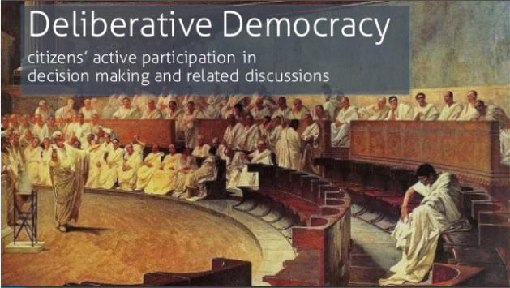
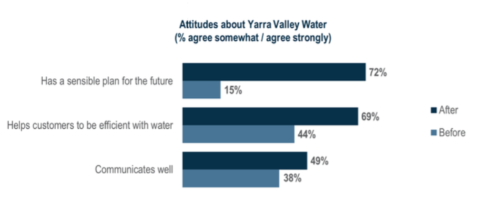
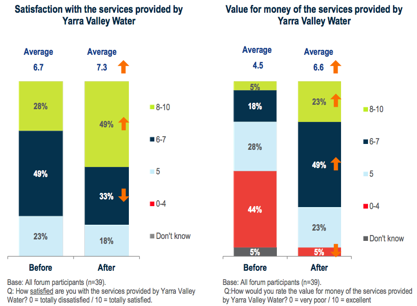

Cross posted at the Mandarin
There is nothing more difficult to take in hand, more perilous to conduct, or more uncertain in its success, than to take the lead in the introduction of a new order ofthings. Because the innovator has for enemies all those who have done well under the old order of things, and lukewarm defenders in those who may do well under the new.
Niccolò Machiavelli

Two forms of representationOne can distinguish between two ways of representing the people. The first, with which we are very familiar, are mechanisms where we select representatives with some specific quality to recommend them. They might be selected by election (this is the foundation of our politics), by the judgement of those senior to them - as is common within organisations, or by self-selection as might occur in a local social club or amongst some grassroots activist organisation. In each case we could tell a story that legitimised the choice as meritocratic. But as we are discovering, there's many a slip between cup and lip. The formal structures of meritocracy can often provide a fertile environment for dysfunction to brew. This is coming increasingly to mind as we bemoan the worlds of inauthenticity and careerist self-interest we've built together - in politics, in bureaucracy, in business indeed even in philanthropy and the non-profit world - and we tune into spoofs and exposes from Yes Minister and the Hollow Men to Utopia, Silicon Valley and The Big Short.
The principal alternative means of representation which is often called 'deliberative democracy' is the process that peppered the polity of ancient Athens. It involves communities and/or their constituent parts being represented by groups of people who are broadly reflective of the makeup of those communities. In the modern world this approach is only starting to gain some traction in the political sphere [1. Citizens’ juries with purely advisory roles are now quite common in Western democracies, but some actual power is beginning to be imparted to bodies chosen by sortition. Two examples of many are the requirement for citizens’ juries to advise on citizens initiated referendums in Oregon, and the random selection of some redistricting commissioners from a prequalified class of people in California's redistricting law.] The most common method for constituting such groups is random selection, but, providing the method is transparent and seen as fit for purpose, it can be legitimate for selection to be made by some statistical process of selection. We will see some examples of this below.
Deliberative democracy mechanisms in administration
In the previous two articles, I've tried to show how we could heal our stricken democracy by making much more robust use of deliberative democracy mechanisms. I sketched out what kind of political institutions I'd like to see us aim for both in the long and short term. In this article I suggest that these mechanisms can also help agencies in numerous ways as they themselves are increasingly realising. They provide a repertoire of options by which some of the worst features of bureaucracy can be ameliorated. And the way 'the people' are directly represented in successful deliberative democracy institutions provides a powerful source of legitimation. This is particularly the case where bureaucracies or statutory officers must decide, or provide advice to politicians who must ultimately decide policy matters in which ethics and community values are prominent and pose difficult dilemmas. I conclude the piece with some longer term aspirations.
Yarra Valley Water and deliberative democracy
When the Reserve Bank sets interest rates, though they have distributional consequences, the decision is generally understood as a technocratic one. That's less so when it comes to the detail of how Yarra Valley Water (YVW) sets its tariffs. Should it continue to fund water conservation even long after the drought? To what extent should YVW - that is YVW's paying customers - subsidise householders who are having trouble paying their bills? We'll see how the community answered those questions shortly but the exercise of encouraging careful deliberation from a group selected to reflect community makeup seems to have had additional benefits in terms of the legitimacy of deliberative democracy mechanisms this made its own contribution to the community's acceptance of YVW's policy decisions and also burnished Yarra Valley Water's reputation.
In the first of these three articles I likened electoral democracy via the mass media to 'road rage' pointing out how dramatically face-to-face contact promotes agreement within groups dealing with social dilemmas. [2. research indicating that face-to-face communication in social dilemma games raises cooperation by a stunning 40 to 45 percentage points. See the first article at Footnote 9.] Sure enough, taking the trouble to constitute a 'mini-public' to consult and fully engage in decision making had important implications for the way the community saw the issues and the players. As often happens the community's opinion of those wrestling with the issues went up (just as their opinion of the media often falls further when they see how simplistically the issues have been covered by the media). Those participating in the process concluded it with a far higher opinion of the way Yarra Valley Water was going about its business in all manner of areas.

Source: Yarra Valley Water Plan, Oct 2012, p. 16.
Source: Yarra Valley Water Plan, Oct 2012, p. 16Not surprisingly Yarra Valley Water's Water Plan concluded "The services received from water utilities are generally not top of mind for most customers. When customers are able to explore the extent of services provided, perceptions of value increased markedly". Further, it turned out that, using deliberative methods such as this uncovered attitudes that seemed to empower the better angels of our nature. When asked whether they'd pay a little more ($2.30 per quarter) for improved aesthetic water quality and reduced service interruptions citizens' opinions went from 67 percent against before a presentation on what was proposed to 79 percent in favour a dramatic result and one that calls into question how persuasive we should find opinion polls taken on matters about which people are poorly informed.
Source: Yarra Valley Water Plan, Oct 2012, p. 17
Reflecting what we know from elsewhere, citizens were even less prepared to pay for improvements - 72 percent were against - when polled quantitatively than citizens at the deliberative forum before they'd had a chance to learn. Yarra Valley Water concluded that "the difference in perspectives between the qualitative result and the quantitative result is due to the different level of interaction that occurs with these research methods". The process also uncovered strong support for the authority's support for low income and vulnerable people uncovering a preparedness to pay very slightly more on water bills ($0.05 per quarter) to fund additional support including free water audit and retro-fitting.
Citizens’ juries and agendas that are 'stuck'
Infrastructure Victoria faces similar kinds of issues. Congestion pricing is an old chestnut which, for all the talk about economic reform, is progressing at glacial pace. As King et al argue:
It is almost universally acknowledged among transportation planners that congestion pricing is the best way, and perhaps the only way, to significantly reduce urban traffic congestion. Politically, however, congestion pricing has always been a tough sell.
Congestion pricing is also a commonsensical way forward. But if people don’t get the time and the deliberative 'space' to look and talk the idea over and search for ways of dealing with the objections of those who'll be disadvantaged by it, reform will be easy political meat for those who want to stop it - including of course the hard-heads of the party in Opposition who will see great opportunities to advance their own and their party's cause. As John Stanley observes "International experience is that public support is typically evenly divided, or mildly negative, prior to implementation but increasingly supportive afterwards." Deliberative democracy institutions give us the best chance we have - short of a time-machine - to get to that land of the future of acceptance and look back. Ordinary people can discuss the pros and cons and learn of others' experience with it. And so it is that the metropolitan citizens' jury that Infrastructure Victoria established to explore forward planing recommended an "Overall pricing review to manage demand for travel at peak/non-peak times across the entire rail and road network" with its strong endorsement as a high priority. If the jury was representative of the community before it convened one may surmise that the process of deliberation changed many minds. And the legitimacy of juries - their conspicuous engagement with 'everyman' suggests such findings could be influential in helping reform occur. Similar things could be said of good policy in numerous areas which are stuck or where the pace of reform is glacial because powerful interests assume (rightly and sometimes not) that their interests may be compromised, or politicians can launch 'zinger' lines of opposition against opposing politicians trying to make headway. Here's a list of such things in all areas of which deliberative forums appear to move citizen's views further towards the consensus of thoughtful professionals in the field.
- Focusing education more on quality of teaching and less on proxies for it that pander to parents (lowering class sizes) or teachers unions (defending the interests of mediocre teachers);
- Tackling climate change; and in that context
- Considering nuclear power on its merits [3. Though a poorly administered citizens' jury in South Australia produced a broadly negative reaction to something that people find intuitively harder to swallow - accepting other countries nuclear waste - a 2012 citizens' jury in NSW was unanimous in its view "that the proposed issue of nuclear power generation should not be dismissed".]
- Moving policy on illicit drugs more towards a 'harm minimisation' stance with the use of mechanisms like drug courts that are otherwise often demonised - generally without real knowledge of the program - as being 'soft on crime';
- Tackling obesity; or
- Having professional demarcations redrawn - for instance between doctors, nurses, and para-medics or between lawyers and para-legals.
It is easy to say that these things are properly the province of politicians, which indeed they are, but good bureaucrats help shape the way issues arise for politicians and help them consider strategic alternatives including leading community deliberation on the issues.
Representing stakeholder groups
Deliberative democracy institutions offer a way of complementing and/or replacing institutions that hold themselves out as representative, but which are imperfectly representative and/or whose business models require behaviour that is poorly aligned with sensible representation. Mancur Olsen made the logic of collective action and the way it shapes our politics a focus of thinking many decades ago, but this lens through which to think about the issues is as relevant as ever. Consider an organisation that says it represents small business. In fact most organisations 'representing' small business are funded by members who are a very small subset of the group that's claimed to be represented. It is it almost certain that members of the organisation will be different to those they claim to represent in some way or other (though it may or may not be material to some public policy issue at stake). Moreover the incentives on the organisation to fund itself will have all manner of influences - some good; some not so good. To attract members a small business association may provide private consulting services to its members. It may provide its members with a collective voice on public policy and services to help members navigate public policy. But another important objective for many such organisations is to get media coverage and that won't always be compatible with taking the most thoughtful or helpful line in the public debate. These observations apply mutatis mutandis to most representation of interest groups in Canberra. Associations representing consumers, workers, doctors, environmentalists only represent the group they claim to represent very imperfectly and always refracted through the institutional interests and imperatives within associations themselves. These are likely to favour activism and the broader career interests of the operatives within associations. I suspect these agencies often dumb down their policy positions to maximise their appeal in the stakeholder group and emphasise their standing for that group's interests. Here agencies can take things into their own hands and engage 'mini-publics' of stakeholder groups and use the now well developed methodologies of deliberative democracy to really partner with communities to solve problems including the problems of making trade-offs between different interests. They can continue dealing with traditional interest group representatives but also know when their positions diverge from the considered opinions of those they represent and be able to bring that perspective into the policy discussion with the public legitimacy that well considered deliberative arrangements should allow.
Where existing institutions are failing
In some areas existing putatively meritocratic structures are simply failing generating hidden crises of dysfunction and illegitimacy. The clearest example of this I know of is the extraordinary growth that's taken place in ethics approvals. An example is best to make the point. Family by Family is a program developed in 2009 and run since then by The Australian Centre for Social Innovation which I chaired until late last year. We have conducted numerous independent evaluations of the program. Each one was fraught for reasons I need not detain the reader with here. However we've never had the impact of the program on children independently assessed. Why? Because the university based unit performing the evaluation advised that it was too difficult to obtain ethics approval to do so. (How ethical is that: to fly blind, or less sighted than one could be, on a central impact of the program?) Ethics approval would be difficult because such an evaluation would involve asking children questions deemed 'sensitive' by the powers that administer ethics approvals. As it was it took a good part of a year to obtain the multiple approvals needed to ask the adults in the program those questions (which are very similar to questions they are asked in the program every few weeks!). It took even longer to obtain data from the government departments funding the program but that's just another part of the jigsaw puzzle that, by the end had me joking with TACSI staff that I wanted a trigger warning whenever evaluation was discussed. This farce represents a kind of reductio ad absurdum of bureaucracy with over 70 pages of NHMRC guidelines sitting at the apex of the pyramid with bureaucrats very often applying them in ways that privilege risk avoidance for their organisations (generally seen through the prism of media management) over and above other interests, most particularly the discovery of new and important knowledge. A much more human and commonsensical approach would be to convene a citizen's jury or similar body from among those whose interests ethics guidelines purport to represent. I expect that, had we been able to do so with the evaluation of Family by Family, the group of families in the program would have been amazed that anyone thought there was any potential issue with the people who had shown such care for the families taking children through a questionnaire to help us further optimise a fantastically effective program. Consistent with the whole philosophy of the program, I'm sure we would have appreciated their input on what we were trying to achieve and had their own insights to offer us. And if they had concerns about the ethics of what we were doing I'm sure we'd be able to take that on board and find ways through to their satisfaction. Similar areas worthy of consideration where citizens jury approaches might help rescue us from bureaucracy and excessive legalism include some adjudications in some areas of privacy and unfair dismissal and perhaps other areas in the administration of awards.
Institutionalising deliberative democracy within government
It's possible to envisage a situation in which the kinds of mechanisms I've outlined here became institutionalised. Just as Yarra Valley Water consulted its community in a way that encouraged their close deliberation on the issues, it is possible to envisage agencies cultivating councils of people reflective of community makeup that might offer some ongoing capacity to reflect community deliberation. And despite all its promise, the burgeoning of experiments in deliberative democracy has yet to really break into the political and bureaucratic mainstream by crossing the divide between powers to advise and powers to influence policy more directly. As Street et al comment with regard to deliberative democracy in health policy "few juries' rulings were considered by decision-making bodies thereby limiting transfer into policy and practice." An overarching citizen's chamber with no direct constitutional power on its own might nevertheless report regularly to parliament on progress in implementing proposals that enjoy significant super-majorities in citizens' juries and chambers. Here it's worth reminding ourselves of one of the themes of my first article, namely that electoral democracy is naturally divisive in its focus on competition for the consent of the governed with all the polarisation, and disregard for sober and truthful communication that that implies. Deliberative democracy mechanisms, by their nature push the discussion in the opposite direction, towards agreement and collective problem solving if necessary through negotiation. As I've argued, at its best the Accord of the 1980s - which formally included the unions and the government, but informally included other social partners such as the business community and the Commonwealth bureaucracy and at a greater distance the welfare and environment lobbies - provided some of this capacity for forward looking collective visioning and negotiation between different parts of our society. Once we cross that threshold it seems to me we will have really brought government closer to the people. Further we will be on our way to 'naturalising' deliberation by citizens as a critical part of the repertoire of a sophisticated democracy.
Good article, with some good examples.
But can I quibble with one tiny side issue:
The problem for teachers unions is that they've seen that management right up to the top of government are very bad at identifying poor teachers. So when government talk about "making it easier to fire underperforming teachers", virtually everyone knows that they mean expensive (ie, highly qualified) teachers, teachers of unpopular subjects, and teachers who attract complaints. The latter generally being a proxy for the self-perceived interests of parents which are also known to be inaccurate (this is being generous, teachers have been hounded out of schools by lynch mobs as well). The worst are attempts to make teachers within a school compete with each other, turning a sharing environment into a backstabbing one (by letting teachers evaluate each other or forcing competition to decide which 10% of teachers get a pay rise or bonus, for example). This is also why "performance pay" is so widely reviled by teachers.
This may be exactly a case for using citizen's juries. Although the history of NZ's experiment with school "board of trustees" is mixed, but one key remark to me is that people aren't so bothered by it that they're willing to learn about it, so a jury could work well (viz, the polarised positions you see in the media are unusual).
Also, the gap between "we should build an international nuclear waste dump" and "The Jury recommends that the NSW Government initiate informed public discussion regarding emerging nuclear technologies" is very important. Even most anti-nuclear activists would agree with the latter. I think your attempted contrast there is at best a stretch.
Thanks Moz,
Unions defend the mediocre and it's a big problem for them.
And alternative systems, including management licence, have plenty of bugs as well, as you advert to.
And I suspect you're right in a lot of what you say about performance pay.
I haven't met too many environmental activists who aren't already highly polarised on nuclear - that is there are quite a few who like the idea - but I haven't noticed those that don't calling for sober reflection on its costs, benefits and risks, except as a rhetorical ploy.
I definitely agree that unions defend the mediocre, I'm just not aware of how a union could work that doesn't. The point of solidarity is, well, solidarity. Most egregiously with police officers, where even admitted murderers are often defended well past the point of sanity. OTOH, unless you call the Liberal Party a union... they're also very keen on defending not just the mediocre, but worse. Perhaps it's an organisational characteristic?
Your nuke comment I can't understand at all, sorry. Too many triple negatives with pike.
I suspect you mean that the anti-nuke people aren't serious about wanting an accounting of the costs and benefits, which I find hard to accept unless you're counting anyone who does so as pro-nuke by definition. John Quiggin, for example, apparently would like nukes to be an option but can't make himself believe they are viable purely on financial grounds, ignoring the usual externalities (cough). It sounds as though you have an absolute demolition of his nonsense ready to hand?
More broadly, nuke advocates often fall into a sunk cost fallacy - we have built our electricity grid around large, highly reliable but not dispatchable electricity generators (thermal, usually coal) and therefore the only possible way we can manage our grid in the future is by having the dominant supply being large, reliable, thermal plants. Dump that (purely historical) requirement and there are a lot of cheaper, easier and faster options. Even biomass starts to look attractive.
I note that a great number of Australians are acting as though they're convinced that micro PV is the way to go (even our "committed to coal" PM... he should really be advocating the reopening of the Pyrmont or White Bay power stations so city people can see how truly wonderful coal is).
It appears the ACT government is dabbling in the advice side of these waters, having engaged newDemocracy to provide a citizens' forum of sorts (Collaboration Hub apparently), which will deliver a set of recommendations to the Minister for Planning and Land Management regarding ways to address future housing needs . The selection process is 40 people chosen at random from whoever responds to a mailout to 15,000 Canberra addresses.
Thanks for the heads up. (Where the hell does that saying come from?)